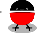
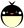
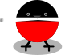
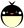

Добро пожаловать, дорогой гость!
Мы собрали для тебя множество интересных сказок и историй, которые можно почитать или послушать. А еще у нас есть для тебя маленький подарок - если ты правильно сосчитаешь количество птичек на этом экране и введешь это число в секретноe окошко - получишь раскраску «Пернатый отряд» в электронном варианте в подарок.